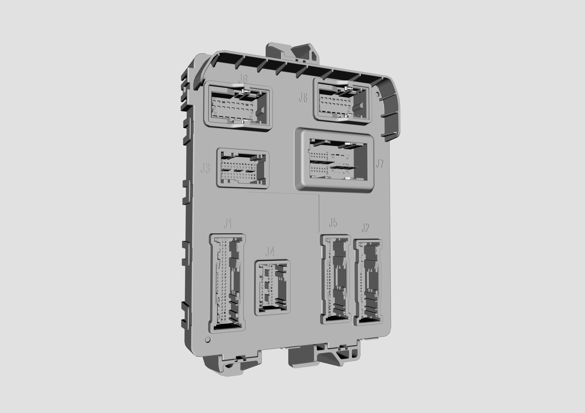
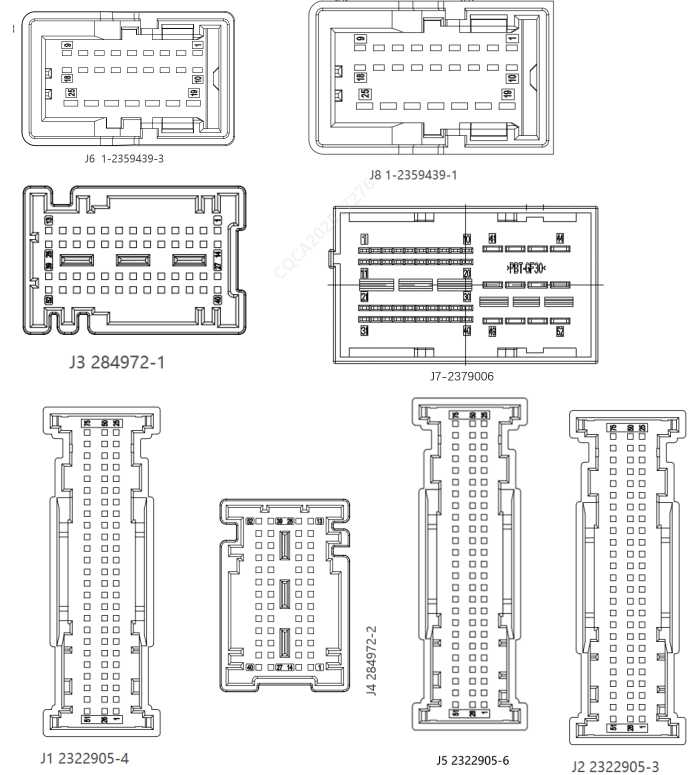

1、功能描述：BDC车身智能控制器总成（前域）位于在主驾左侧围钣金上，有信号路由、车窗车门控制等功能。
2、控制器外形示意图：

3、控制器接口示意图：

4、引脚功能定义：
| 引脚 | 额定电流 | 功能说明 | 信号类型 |
| 底盘、仪表线束--接插件型号（75PIN）：2322905-4(J1) | |||
| J1-1 | 1A | 前低频天线-/Immo | Ant- |
| J1-2 | 10mA | A/C按键 | I-D-L |
| J1-3 | 10mA | AUTO按键 | I-D-L |
| J1-4 | / | 一键启动开关总成地 | GND（信号地） |
| J1-5 | 10mA | 日照强度传感器信号右 | I-AD |
| J1-6 | 10mA | 日照强度传感器信号左 | I-AD |
| J1-7 | 30mA | 顶灯DOOR档指示灯 | O-H |
| J1-8 | 30mA | 一键启动开关指示灯红色 | O-H |
| J1-9 | 30mA | AUTO按键指示灯 | O-H |
| J1-10 | 30mA | 启停开关背景灯（PWM） | O-H |
| J1-11 | 30mA | 顶灯ON档指示灯 | O-H |
| J1-12 | / | / | / |
| J1-13 | / | / | / |
| J1-14 | 5mA | 无线充电禁止 | O-L |
| J1-15 | 5mA | 后雨刮低速开关（非怀挡） | I-D-H |
| J1-16 | 5mA | 智驾控制器断电继电器反馈 | I-D-H |
| J1-17 | 5mA | 前洗涤开关（非怀挡） | I-D-H |
| J1-18 | 20mA | P档信号1（怀挡） | I-A |
| J1-19 | 5mA | 高压油箱盖开关 | I-D-L |
| J1-20 | / | 背景亮度调节开关参考地 | GND（信号地） |
| J1-21 | 150mA | IG1继电器 | O-L |
| J1-22 | 30mA | 防盗指示灯 | O-L |
| J1-23 | 100mA | 5V供电2 | 电源 |
| J1-24 | / | 中央热管理模块 | LIN |
| J1-25 | 10mA | 前排鼓风机控制信号 | O-A |
| J1-26 | 1A | 前低频天线+/Immo | Ant+ |
| J1-27 | 1A | 预留低频天线+ | Ant+ |
| J1-28 | 1A | 预留低频天线- | Ant- |
| J1-29 | 10mA | 驾驶模式1（AD采样） | I-A |
| J1-30 | 10mA | 冷暖风门位置反馈信号（右） | I-AD |
| J1-31 | 10mA | 冷暖风门位置反馈信号（左） | I-AD |
| J1-32 | 10mA | 车内温度传感器总成 | I-AD |
| J1-33 | 10mA | 内外循环风门位置反馈信号 | I-AD |
| J1-34 | 10mA | 霍尔信号1（怀挡） | I-Hall |
| J1-35 | 10mA | 霍尔信号4（怀挡） | I-Hall |
| J1-36 | 10mA | 霍尔信号3（怀挡） | I-Hall |
| J1-37 | 100mA | 前除霜按键 | I-D-L |
| J1-38 | 10mA | 驾驶模式2（自复位低有效） | I-D-L |
| J1-39 | / | 后洗涤开关(怀挡) | I-D-L |
| J1-40 | 5mA | 左变道 | I-D-L |
| J1-41 | 5mA | 转向初始档 | I-D-L |
| J1-42 | 5mA | 自动灯光开关（灯光初始档） | I-D-L |
| J1-43 | 5mA | 雨刮点动 | I-D-L |
| J1-44 | 20mA | P档信号2（怀挡） | I-A |
| J1-45 | 5mA | 超车灯开关 | I-D-L |
| J1-46 | 5mA | 紧急报警开关 | I-D-L |
| J1-47 | / | GND3（VCU，模拟地）怀挡 | GND（信号地） |
| J1-48 | 5mA | IG1继电器反馈 | I-D-H |
| J1-49 | / | 方向盘加热NTC地 | GND（信号地） |
| J1-50 | 10mA | 前排鼓风机反馈信号 | I-AD |
| J1-51 | / | 风暖PTC出口温度传感器2(APTC表面温度传感器2) | I-A |
| J1-52 | 10mA | 模式风门位置反馈信号 | I-AD |
| J1-53 | 5mA | 环境光传感器 | I-A |
| J1-54 | / | 风口温度传感器1 | I-A |
| J1-55 | 10mA | 充电插座温度探头4+（L3位置） | I-A |
| J1-56 | 10mA | 蒸发器温度信号 | I-AD |
| J1-57 | 5mA | 方向盘加热NTC输入 | I-A |
| J1-58 | 10mA | 九通阀（四通阀）位置反馈 | I-AD |
| J1-59 | / | 热管理信号地 | GND（信号地） |
| J1-60 | 10mA | 霍尔信号5（怀挡） | I-Hall |
| J1-61 | 10mA | 霍尔信号6（怀挡） | I-Hall |
| J1-62 | 10mA | 霍尔信号2（怀挡） | I-Hall |
| J1-63 | 5mA | 远光灯开关 | I-D-L |
| J1-64 | 5mA | 前雨刮自动/间歇开关 | I-D-H |
| J1-65 | 5mA | 前雨刮低速开关 | I-D-H |
| J1-66 | 5mA | 前挡风玻璃加热开关 | I-D-L |
| J1-67 | 5mA | 左转向灯开关（怀挡左二档） | I-D-L |
| J1-68 | 5mA | 右转向灯开关（怀挡右二档） | I-D-L |
| J1-69 | 5mA | 雨刮auto档2 | I-D-L |
| J1-70 | 5mA | 喇叭开关 | I-D-L |
| J1-71 | 5mA | 右变道 | I-D-L |
| J1-72 | 5mA | 风量开闭按键 | I-D-L |
| J1-73 | / | 启停开关2 | I-A |
| J1-74 | / | 启停开关1 | I-A |
| J1-75 | 5mA | ACC继电器反馈 | I-D-H |
| 底盘线束--接插件型号（75PIN）：2322905-3(J2) | |||
| J2-1 | / | 门把手PE信号地 | GND（信号地） |
| J2-2 | / | / | / |
| J2-3 | / | / | / |
| J2-4 | 2.5mA | 充电插座温度探头1+（L位置） | I-A |
| J2-5 | 5mA | 主驾座椅SBR传感器 | I-D-L |
| J2-6 | 10mA | 左后电控儿童锁开关 | I-D-L |
| J2-7 | 5mA | 左后电控儿童锁锁状态 | I-D-L |
| J2-8 | 10mA | 隐藏式门把手位置状态输入左后折叠 | I-D-L |
| J2-9 | 5mA | 转向灯诊断反馈信号后 | I-D-L |
| J2-10 | 10mA | 隐藏式门把手位置状态输入主驾驶侧展开 | I-D-L |
| J2-11 | 10mA | 隐藏式门把手位置状态输入主驾驶侧折叠 | I-D-L |
| J2-12 | 6mA | 乘员抑制输入（w_lock）（窗锁开关） | I-D-L |
| J2-13 | 5mA | 中控闭锁开关 | I-D-L |
| J2-14 | 5mA | 行李箱PE释放开关 | I-D-L |
| J2-15 | / | 充电插座温度探头1,2共线 | GND（信号地） |
| J2-16 | 5mA | 后雨刮低速开关（怀挡） | I-D-L |
| J2-17 | 5mA | 前雨刮高速开关（怀挡） | I-D-L |
| J2-18 | 5mA | 主驾驶侧门状态 | I-D-L |
| J2-19 | 5mA | 副驾驶侧门状态 | I-D-L |
| J2-20 | 5mA | 主驾驶侧锁状态 | I-D-L |
| J2-21 | 20mA | 充电枪电子锁反馈1 | I-D-L |
| J2-22 | 20mA | 充电枪电子锁反馈2 | I-D-L |
| J2-23 | 5mA | P/N档开关 | I-D-L |
| J2-24 | 10mA | 碰撞输入 | I-PWM |
| J2-25 | 10mA | 脚踢传感器 | I-PWM |
| J2-26 | 10mA | 压缩机入口温度 | I-AD |
| J2-27 | 10mA | 压缩机出口温度 | I-AD |
| J2-28 | / | / | / |
| J2-29 | 10mA | 风口温度传感器4 | I-AD |
| J2-30 | / | 充电插座 引脚1 GND | GND（信号地） |
| J2-31 | 10mA | 隐藏式门把手位置状态输入副驾驶侧展开 | I-D-L |
| J2-32 | 5mA | 右后电控儿童锁开关 | I-D-L |
| J2-33 | 10mA | 隐藏式门把手位置状态输入副驾驶侧折叠 | I-D-L |
| J2-34 | 5mA | 右后电控儿童锁锁状态 | I-D-L |
| J2-35 | 30mA | 后雨刮停止信号 | I-D-L |
| J2-36 | 10mA | 隐藏式门把手位置状态输入右后折叠 | I-D-L |
| J2-37 | 10mA | 隐藏式门把手位置状态输入右后展开 | I-D-L |
| J2-38 | 5mA | 右后门状态 | I-D-L |
| J2-39 | 5mA | 左后门状态 | I-D-L |
| J2-40 | 5mA | 顶灯ON档开关 | I-D-L |
| J2-41 | 5mA | 顶灯DOOR档开关 | I-D-L |
| J2-42 | 5mA | 左后顶灯开关 | I-D-L |
| J2-43 | 5mA | 右后顶灯开关 | I-D-L |
| J2-44 | 5mA | 副驾驶侧锁状态（右前锁状态） | I-D-L |
| J2-45 | 5mA | 中控解锁开关 | I-D-L |
| J2-46 | 5mA | 行李箱状态 | I-D-L |
| J2-47 | 10mA | 右后中雷达探头 | I-PWM |
| J2-48 | 10mA | 左后雷达探头 | I-PWM |
| J2-49 | 10mA | 左后中雷达探头 | I-PWM |
| J2-50 | 10mA | 右后雷达探头 | I-PWM |
| J2-51 | 150mA | 右后顶灯输出 | O-L |
| J2-52 | 150mA | 左后顶灯输出/后顶灯输出 | O-L |
| J2-53 | 0.5A | 行李箱灯 | O-H |
| J2-54 | 20mA | 充电插座 LED指示灯BLUE（H） | O-H |
| J2-55 | 30mA | 闭锁指示灯 | O-L |
| J2-56 | 0.5A | 照地灯输出 | O-H |
| J2-57 | 0.8A | 电池冷却器截止阀驱动 | O-L |
| J2-58 | 30mA | 乘员抑制指示灯输出（窗锁指示灯） | O-L |
| J2-59 | 60mA | 左后视镜驱动公共端 | O-H-Bridge |
| J2-60 | 60mA | 左后视镜左右驱动 | O-H-Bridge |
| J2-61 | 60mA | 左后视镜上下驱动 | O-H-Bridge |
| J2-62 | 60mA | 右后视镜驱动公共端 | O-H-Bridge |
| J2-63 | 60mA | 右后视镜上下驱动 | O-H-Bridge |
| J2-64 | 60mA | 右后视镜左右驱动 | O-H-Bridge |
| J2-65 | 10mA | 后排鼓风机控制信号 | O-A |
| J2-66 | 10mA | 风口温度传感器3 | I-AD |
| J2-67 | / | 主驾车窗开关地 | GND（信号地） |
| J2-68 | 5mA | 左后门把手PE开关 | I-D-L |
| J2-69 | 5mA | 右后门把手PE开关 | I-D-L |
| J2-70 | 5mA/10mA | 主驾驶侧门把手PE开关 | I-D-L |
| J2-71 | 5mA/10mA | 副驾驶侧门把手PE开关 | I-D-L |
| J2-72 | / | 前洗涤开关（怀挡） | I-D-L |
| J2-73 | 100mA | 后雷达电源 | O-H |
| J2-74 | 1A | 后视镜展开输出 | O-H-Bridge |
| J2-75 | 1A | 后视镜折叠输出 | O-H-Bridge |
| 机舱线束--接插件型号（52PIN）：284972-1(J3) | |||
| J3-1 | 10mA | 空气质量传感器信号 | I-PWM |
| J3-2 | 100mA | 5V供电1 | 电源 |
| J3-3 | 100mA | 前雷达电源 | O-H |
| J3-4 | / | / | / |
| J3-5 | / | / | / |
| J3-6 | 10mA | 前雷达2 | I-PWM |
| J3-7 | 10mA | 前雷达1 | I-PWM |
| J3-8 | 10mA | 电池驱比例阀位置反馈 | I-AD |
| J3-9 | 2.5mA | 充电插座温度探头2+（N位置） | I-A |
| J3-10 | 10mA | PT3温度 | I-AD |
| J3-11 | 10mA | 充电插座温度探头3+（L2位置） | I-AD |
| J3-12 | 10mA | PT1温度 | I-AD |
| J3-13 | 10mA | PT1压力 | I-AD |
| J3-14 | 10mA | 车外温度传感器 | I-AD |
| J3-15 | 10mA | PT2压力 | I-AD |
| J3-16 | 10mA | PT2温度 | I-AD |
| J3-17 | 10mA | 电机回路水温信号 | I-AD |
| J3-18 | / | / | / |
| J3-19 | 30mA | 远光信号线 | O-H |
| J3-20 | 10mA | 大灯高度调节输出 | O-A |
| J3-21 | 100mA | DLP使能信号 | O-H |
| J3-22 | 5mA | 倒档开关 | I-D-L |
| J3-23 | 5mA | 转向灯诊断反馈信号前 | I-D-L |
| J3-24 | 30mA | 前雨刮停止信号 | I-D-L |
| J3-25 | 10mA | PT3压力 | I-AD |
| J3-26 | 10mA | 电池进水温度信号 | I-AD |
| J3-27 | 500mA | 电池驱比例阀驱动信号+为A端（三通阀） | H-Bridge |
| J3-28 | 10mA | 冷却风扇控制信号 | O-PWM |
| J3-29 | 500mA | 电池驱比例阀驱动信号+为B端（三通阀） | H-Bridge |
| J3-30 | 500mA | 使能信号（压缩机、风扇、冷却水泵、AGS） | O-L |
| J3-31 | 500mA | 使能信号（PTC\暖通水泵) | O-L |
| J3-32 | 150mA | 后除霜继电器控制 | O-L |
| J3-33 | 5mA | 制动开关 | I-D-H |
| J3-34 | 5mA | 引擎盖状态 | I-D-L |
| J3-35 | 5mA | 离合器开关（悬空有效） | I-D-L |
| J3-36 | 150mA | 外部继电器驱动洗涤电机（前洗涤） | O-L |
| J3-37 | 0.8A | SOV1(低有效） | O-L |
| J3-38 | 450mA | 远光继电器 | O-L |
| J3-39 | 150mA | 喇叭继电器 | O-L |
| J3-40 | / | / | / |
| J3-41 | 1A | SOV2(低有效） | H-Bridge |
| J3-42 | 10mA | 中冷水泵调速及故障检测 | O-PWM |
| J3-43 | 10mA | 电机水泵调速及故障检测 | O-PWM |
| J3-44 | / | 智驾相关控制器断电继电器 | O-L |
| J3-45 | 10mA | 电池水泵调速及故障检测 | O-PWM |
| J3-46 | / | / | / |
| J3-47 | / | 冷却风扇中速继电器（低有效） | O-L |
| J3-48 | 150mA | 前雨刮电源继电器控制 | O-L |
| J3-49 | 150mA | 后雨刮继电器 | O-L |
| J3-50 | / | 冷却风扇低速继电器（低有效） | O-L |
| J3-51 | 150mA | 前雨刮高速继电器控制 | O-L |
| J3-52 | / | 后雨刮洗涤驱动 | O-L |
| 仪表线束--接插件型号（52PIN）：284972-2(J4) | |||
| J4-1 | 150mA | A/C按键指示灯 | O-L |
| J4-2 | 100mA | 风口温度传感器2 | I-A |
| J4-3 | 10mA | 风暖PTC出口温度传感器(APTC表面温度传感器) | I-AD |
| J4-4 | 10mA | 左后视镜上下方向调节开关(M1L) | I-A |
| J4-5 | LIN:10(方向盘） | LIN | |
| J4-6 | LIN：7（空调面板、ptc） | LIN | |
| J4-7 | LIN：1（遮阳帘，主驾车窗开关） | LIN | |
| J4-8 | LIN:3（氛围灯） | LIN | |
| J4-9 | 20mA | 电源1（怀挡 5V） | O-5V |
| J4-10 | 20mA | 电源2（怀挡 5V） | O-5V |
| J4-11 | 500mA | 左混合风门驱动信号（为+时采暖方向） | H-Bridge |
| J4-12 | 500mA | 右混合风门驱动信号（为+时采暖方向） | H-Bridge |
| J4-13 | 500mA | 右混合风门驱动信号（为+时制冷方向） | H-Bridge |
| J4-14 | 10mA | 离子发生器控制 | O-L |
| J4-15 | 150mA | ACC继电器 | O-L |
| J4-16 | 10mA | 左后视镜左右方向调节开关(M2L) | I-A |
| J4-17 | 10mA | 右后视镜上下方向调节开关(M1R) | I-A |
| J4-18 | / | 前贯穿灯LIN | LIN |
| J4-19 | / | LIN:6（座椅按摩） | LIN |
| J4-20 | / | LIN:2（雨量传感器） | LIN |
| J4-21 | / | GND4（VCU，模拟地）怀挡 | GND（信号地） |
| J4-22 | 500mA | 内外循环风门驱动信号（为+外循环） | H-Bridge |
| J4-23 | 500mA | 内外循环风门驱动信号（为+内循环） | H-Bridge |
| J4-24 | 1A | SOV3 | O-L |
| J4-25 | 500mA | 冷却风扇挡位控制（高） | O-L |
| J4-26 | 500mA | 左混合风门驱动信号（为+时制冷方向） | H-Bridge |
| J4-27 | / | BCAN终端电阻 | CAN |
| J4-28 | / | BCAN终端电阻 | CAN |
| J4-29 | / | HybridA_CANFD-H(带终端电阻EV) | CAN |
| J4-30 | / | ADAS_A CANFD-L（带终端电阻） | CAN |
| J4-31 | / | Data_CANFD-L（带终端电阻） | CAN |
| J4-32 | / | Data_CANFD-L（带终端电阻） | CAN |
| J4-33 | / | / | / |
| J4-34 | / | / | / |
| J4-35 | / | Diag_CANFD-H（带终端电阻） | CAN |
| J4-36 | / | PT_CAN-L（带终端电阻） | CAN |
| J4-37 | / | INFO_CANFD-H（带终端电阻） | CAN |
| J4-38 | / | Body_CAN-L（带终端电阻） | CAN |
| J4-39 | 500mA | 模式风门驱动信号(为+时吹面) | H-Bridge |
| J4-40 | / | CANx（仅终端电阻） | CAN |
| J4-41 | / | CANx（仅终端电阻） | CAN |
| J4-42 | / | HybridA_CANFD-L(带终端电阻EV) | CAN |
| J4-43 | / | ADAS_A CANFD-H（带终端电阻） | CAN |
| J4-44 | / | CHS_CANFD-L（带终端电阻） | CAN |
| J4-45 | / | Data_CANFD-H（带终端电阻） | CAN |
| J4-46 | / | / | / |
| J4-47 | / | / | / |
| J4-48 | / | Diag_CANFD-L（带终端电阻） | CAN |
| J4-49 | / | PT_CAN-H（带终端电阻） | CAN |
| J4-50 | / | INFO_CANFD-L（带终端电阻） | CAN |
| J4-51 | / | Body_CAN-H（带终端电阻） | CAN |
| J4-52 | 500mA | 模式风门驱动信号(为+时除霜) | H-Bridge |
| 底盘线束--接插件型号（75PIN）：284972-3(J5) | |||
| J5-1 | / | 预留低频天线- | Ant- |
| J5-2 | / | 预留低频天线+ | Ant+ |
| J5-3 | / | 后低频天线- | Ant- |
| J5-4 | / | 后低频天线+ | Ant+ |
| J5-5 | / | AUTO按键指示灯 | O-L |
| J5-6 | / | 前除霜按键指示灯 | O-L |
| J5-7 | / | 充电插座LED灯：GREEN | O-H |
| J5-8 | / | 充电插座LED灯：RED | O-H |
| J5-9 | / | / | / |
| J5-10 | / | 座椅加热NTC公共地 | GND（信号地） |
| J5-11 | / | 冷却风扇高速继电器（低有效） | H-Bridge |
| J5-12 | / | 风量开闭按键指示灯 | O-L |
| J5-13 | / | 风暖PTC档位(中) | O-H-Bridge |
| J5-14 | / | / | / |
| J5-15 | / | / | / |
| J5-16 | / | 酒精锁输出 | O-H-Bridge |
| J5-17 | / | / | / |
| J5-18 | / | 前挡风玻璃加热驱动2 | O-L |
| J5-19 | / | 雷达地 | GND（信号地） |
| J5-20 | / | / | / |
| J5-21 | / | / | / |
| J5-22 | / | 三通阀预留+ | H-Bridge |
| J5-23 | / | 右后电开输出PIN7 EXV1 | H-Bridge |
| J5-24 | / | 三通阀预留- | O-L |
| J5-25 | / | 左后电开输出PIN7 | O-L |
| J5-26 | / | 右门低频天线- | Ant- |
| J5-27 | / | 右门低频天线+ | Ant+ |
| J5-28 | / | 车窗开关GND | GND（信号地） |
| J5-29 | / | 副驾车窗开关输入 | I-A |
| J5-30 | / | 左后车窗开关输入 | I-A |
| J5-31 | / | 右后车窗开关输入 | I-A |
| J5-32 | / | GND2（VCU，I/O地）怀挡 | GND（信号地） |
| J5-33 | / | / | / |
| J5-34 | / | 主驾车窗开关主驾驶侧输入 | I-A |
| J5-35 | / | 主驾车窗开关副驾驶侧输入 | I-A |
| J5-36 | / | 主驾右后车窗开关输入 | I-A |
| J5-37 | / | / | / |
| J5-38 | / | / | / |
| J5-39 | / | 右后视镜上下位置传感器输入 | I-A |
| J5-40 | / | 右后视镜左右位置传感器输入 | I-A |
| J5-41 | / | 右后车门全开状态 | I-D-L |
| J5-42 | / | 主驾座椅向前调节开关 | I-D-L |
| J5-43 | / | 主驾座椅向后调节开关 | I-D-L |
| J5-44 | / | 副驾车门全开状态 | I-D-L |
| J5-45 | / | 九通阀门输出2 | O-H-Bridge |
| J5-46 | / | 预留低有效输出 | LSD |
| J5-47 | / | 九通阀门输出1 | O-H-Bridge |
| J5-48 | / | 主驾座椅水平位置霍尔信号 | I-HALL |
| J5-49 | / | GND1（VCU，I/O地）怀挡 、主驾座椅水平位置信号地 | GND（信号地） |
| J5-50 | / | 两位三通阀霍尔预留 | I-HALL |
| J5-51 | / | 左门低频天线- | Ant- |
| J5-52 | / | 左门低频天线+ | Ant+ |
| J5-53 | / | 预留数字输入2 | I-D-L |
| J5-54 | / | 前雨刮自动/间歇开关(怀挡) | I-D-L |
| J5-55 | / | 前雨刮低速开关（怀挡） | I-D-L |
| J5-56 | / | 后视镜传感器5V供电 | O-5V |
| J5-57 | / | 酒精锁输入 | I-D-H |
| J5-58 | / | 主驾外开把手外开/短降 | I-D-L |
| J5-59 | / | 副驾外开把手外开/短降 | I-D-L |
| J5-60 | / | 主驾左后车窗开关输入 | I-A |
| J5-61 | / | 左后视镜左右位置传感器输入 | I-A |
| J5-62 | / | LIN：5（射频模块） | LIN |
| J5-63 | / | 左后视镜上下位置传感器输入 | I-A |
| J5-64 | / | DR_NTC+副驾温度传感器信号 | I-A |
| J5-65 | / | DR_NTC+主驾温度传感器信号 | I-A |
| J5-66 | / | 右后车门内开按钮 | I-D-L |
| J5-67 | / | 副驾车门内开按钮 | I-D-L |
| J5-68 | / | 左后车门全开状态 | I-D-L |
| J5-69 | / | 主驾车门全开状态 | I-D-L |
| J5-70 | / | 后蒸发器冷媒截止阀冷却风扇中速继电器（低有效） | O-L |
| J5-71 | / | EXV1_XP | O-H-Bridge |
| J5-72 | / | EXV1_XN | O-H-Bridge |
| J5-73 | / | EXV1_YN | O-H-Bridge |
| J5-74 | / | EXV1_YP | O-H-Bridge |
| J5-75 | / | / | / |
| 底盘线束--接插件型号（25PIN）：1-2359439-3(J6) | |||
| J6-1 | / | 电源2 | Power |
| J6-2 | 5A | 右近光输出 | O-H |
| J6-3 | 1.2A | 侧标志灯（黄光） | O-H-PWM |
| J6-4 | 2A | 右后雾灯 | O-H-PWM |
| J6-5 | 3.5A | 左转向灯 | O-H |
| J6-6 | / | 电源1 | Power |
| J6-7 | 4.7A | 前位置灯及牌照灯输出 | O-H-PWM |
| J6-8 | 4.5A | 节能输出 | O-H |
| J6-9 | 5A | 左前雾灯 | O-H |
| J6-10 | 3.5A | 右日间行车灯 | O-H |
| J6-11 | 1.2A | 侧标志灯（白光） | O-H-PWM |
| J6-12 | 5A | 左近光输出 | O-H |
| J6-13 | / | 电源7 | Power |
| J6-14 | 3.5A | 左日间行车灯 | O-H |
| J6-15 | 1A | 氛围灯（硬线） | O-H-PWM |
| J6-16 | 2A | 背景光输出 | O-H-PWM |
| J6-17 | 3.5A | 小蓝灯输出 | O-H |
| J6-18 | 5A | 右前雾灯 | O-H |
| J6-19 | / | 电源3 | Power |
| J6-20 | 25A | 接车身地 | GND（功率地） |
| J6-21 | / | 电源6 | Power |
| J6-22 | 8A | 左后车窗下降输出 | Bridge |
| J6-23 | 8A | 左后车窗上升输出 | Bridge |
| J6-24 | 8A | 主驾驶侧车窗下降输出 | Bridge |
| J6-25 | 8A | 主驾驶侧车窗上升输出 | Bridge |
| 底盘/前舱--接插件型号（52PIN）：接插件型号2379006(J7) | |||
| J7-1 | 1A | 两位三通阀预留 | O-H-PWM & Bridge |
| J7-2 | / | / | / |
| J7-3 | / | / | / |
| J7-4 | 1A | 两位三通阀预留 | O-H-PWM & Bridge |
| J7-5 | / | 信号地1（VCU 5V_1） | GND |
| J7-6 | / | A+ wakeup（充电枪唤醒，外部8-24V） | I-A |
| J7-7 | 3A | 右后儿童锁驱动（+） | O-In-Relay |
| J7-8 | / | 信号地2（VCU 5V_2） | GND |
| J7-9 | / | Accelerator Pedal Signal1 | I-A |
| J7-10 | 3A | 右后儿童锁驱动（-） | O-In-Relay |
| J7-11 | / | Accelerator Pedal Signal2 | I-A |
| J7-12 | / | 信号地3（VCU 快充温度传感器） | GND |
| J7-13 | 1A | 两位三通阀预留 | O-H-PWM & Bridge |
| J7-14 | / | 快充座温度传感器1 | I-A |
| J7-15 | / | 快充座温度传感器2 | I-A |
| J7-16 | 1A | 两位三通阀预留 | O-H-PWM & Bridge |
| J7-17 | / | 主继电器电源 VBR | I-A |
| J7-18 | / | 高压互锁 HVIL1 Input(10 to 2000HZ) | FI |
| J7-19 | 1A | 充电插座电子锁负 | O-H-PWM & Bridge |
| J7-20 | / | 高压互锁 HVIL2 Input(10 to 2000HZ) | FI |
| J7-21 | / | 主继电器电源 VBR驱动 | O-L |
| J7-22 | 1A | 充电插座电子锁正 | O-H-PWM & Bridge |
| J7-23 | / | BCU Wakeup Output | HSD |
| J7-24 | / | IPU Wakeup Output | HSD |
| J7-25 | / | PDU Wakeup Output | HSD |
| J7-26 | / | 高压互锁1 HVIL Output | PWM |
| J7-27 | / | 高压互锁2 HVIL Output | PWM |
| J7-28 | 150mA | Sensor 5V_1 | O-H |
| J7-29 | 150mA | Sensor 5V_2 | O-H |
| J7-30 | / | 预留数字输入1 | I-D-L/I-D-H |
| J7-31 | PCAN终端电阻 | CAN | |
| J7-32 | PCAN终端电阻 | CAN | |
| J7-33 | XCP CAN_H | CANFD | |
| J7-34 | XCP CAN_L | CANFD | |
| J7-35 | 预留数字输入2 | I-D-L/I-D-H | |
| J7-36 | 预留模拟输入1 | I-A | |
| J7-37 | / | / | 电路空间占用 |
| J7-38 | / | / | 电路空间占用 |
| J7-39 | 3A | 左后儿童锁驱动（+） | O-In-Relay |
| J7-40 | 3A | 左后儿童锁驱动（-） | O-In-Relay |
| J7-41 | 5A | 座椅向前调节输出 | O-In-Relay |
| J7-42 | 3A | 座椅向后调节输出 | O-In-Relay |
| J7-43 | 10A | 方向盘加热输出 | O-H-PWM |
| J7-44 | 3.5A | 顶灯输出 | O-L-PWM |
| J7-45 | / | 电源9 | Power |
| J7-46 | / | 接车身地 | GND（功率地） |
| J7-47 | 3A | 主驾门解锁输出 | O-In-Relay |
| J7-48 | 9A | 其它三门解锁输出 | O-In-Relay |
| J7-49 | / | 接车身地 | GND（功率地） |
| J7-50 | 12A | 闭锁输出 | O-In-Relay |
| J7-51 | 3A | 行李箱释放输出 | O-In-Relay |
| J7-52 | / | 电源8 | Power |
| 底盘/前舱--接插件型号（25PIN）：1-2359439-1(J8) | |||
| J8-1 | / | / | / |
| J8-2 | / | 接车身地 | GND（功率地） |
| J8-3 | 3.5A | 制动灯 | O-H-PWM |
| J8-4 | 3.5A | 倒车灯 | O-H |
| J8-5 | 3.44A | 前贯穿灯 | O-H-PWM |
| J8-6 | 3.44A | 后贯穿灯 | O-H-PWM |
| J8-7 | 7.5A | 副驾加热（三档）输出 | O-H |
| J8-8 | 7.5A | 主驾加热（三档）输出 | O-H |
| J8-9 | 3A | 后位置灯 | O-H-PWM |
| J8-10 | / | / | / |
| J8-11 | / | 接车身地 | GND（功率地） |
| J8-12 | 20mA | DR_FAN_PWM副驾座椅通风（三档） | O-L-PWM |
| J8-13 | 20mA | DR_FAN_PWM主驾座椅通风（三档） | O-L-PWM |
| J8-14 | 1A | 牌照灯 | O-H |
| J8-15 | 2A | 高位制动灯 | O-H-PWM |
| J8-16 | 3.5A | 右转向灯 | O-H |
| J8-17 | 10A | 接车身地 | GND（功率地） |
| J8-18 | 2A | 左后雾灯 | O-H-PWM |
| J8-19 | / | 电源5 | Power |
| J8-20 | 8A | 右后车窗下降输出 | Bridge |
| J8-21 | 8A | 右后车窗上升输出 | Bridge |
| J8-22 | / | 电源10 | Power |
| J8-23 | 8A | 副驾驶侧车窗下降输出 | Bridge |
| J8-24 | 8A | 副驾驶侧车窗上升输出 | Bridge |
| J8-25 | / | 电源4 | Power |